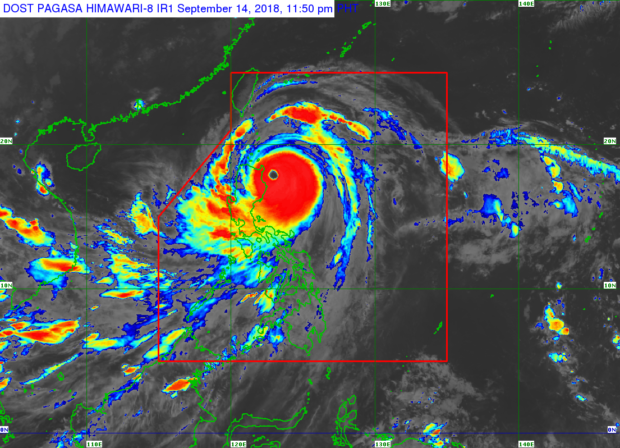

How to Survive a Typhoon?
In the occurence of a typhoon, a strong and possibly destructive tropical cyclone, it is critical for inhabitants in susceptible locations to prepare by securing their houses, obtaining emergency supplies, and obeying evacuation instructions to guarantee their safety and welfare. Rest confident that by keeping educated and adopting proactive actions, folks may efficiently handle a typhoon's obstacles and emerge resilient.
How to Prepare for a Typhoon?
Consider these steps before, during, and after a Typhoon:
Before a Typhoon
- Watch out for weather updates and predictions from reputable sites like the Philippine Atmospheric, Geophysical and Astronomical Services Administration (PAGASA).
- Pay attention to typhoon signals and warnings issued by local authorities.
- Together with your family, make an emergency plan that includes meeting locations, evacuation routes, and communication techniques.
- Assign duties to each family member and make sure that everyone is aware of what to do in an emergency.
- Put together a typhoon emergency kit with vital supplies including water, non-perishable food, flashlights, batteries, first aid supplies, prescription drugs, cash, crucial papers, and personal hygiene items.
- Pack food, drink, medicine, and pet carriers among other supplies.
- Use plywood or storm shutters to strengthen doors and windows.
- In order to reduce the possibility of falling debris, prune trees and remove dead branches.
- Safeguard garden equipment, patio furniture, and other items that are unsecured and might fly in high gusts.
- Be aware of the the location of the closest evacuation centers.
- Learn the alternate routes and evacuation routes in case of road closures.inds.
1. Stay Informed
2. Develop a Family Emergency Plan:
3. Prepare an Emergency Kit
4.Secure Your Home
5. Identify Evacuation Routes and Shelters
During a Typhoon
- Use plywood or storm shutters to strengthen doors and windows.
- In order to reduce the possibility of falling debris, prune trees and remove dead branches.
- Safeguard garden equipment, patio furniture, and other items that are unsecured and might fly in high gusts.
- Use cellphone, television, or radio alerts to stay updated on the typhoon's progress.
- Observe the guidelines and cautions that the local authorities have provided.
- Keep enough supplies in your emergency kit to last several days, and keep it easily accessible.
- To reduce the chance of a fire, use flashlights instead of candles.
- Steer clear of flooded places whether driving or walking since the water may be deeper or flowing more quickly than it looks.
1.Stay Indoors and Seek Shelter
2. Monitor Updates
3. Keep Emergency Supplies Accessible
4. Stay Away from Flooded Areas
After a Typhoon
- Take cautious when handling debris and downed electrical wires, and inspect your property for damage.
- For insurance purposes, take pictures of any damage.
- Please notify local authorities of any emergencies or risks, such as flooding, landslides, or downed power lines.
- Check on your neighbors, especially the elderly and fragile, and provide aid as required.
- To avoid future floods, safely remove trash from your home and clean clogged drains and gutters.
- Exercise caution around tainted water, sharp objects, and shaky buildings.
- Continue keeping up with PAGASA and local authorities' updates on current weather conditions and recovery operation.